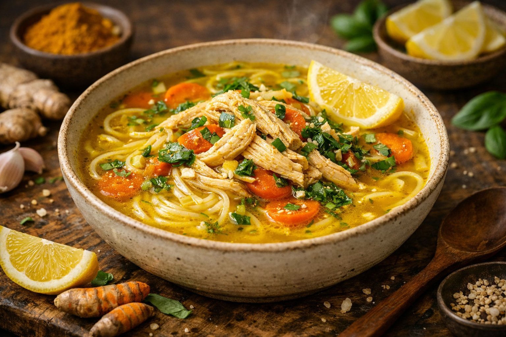
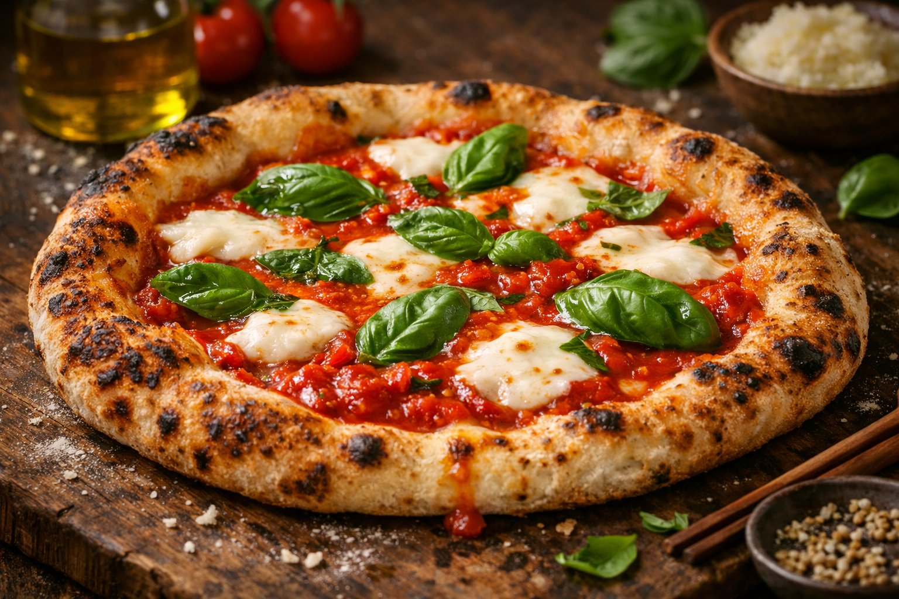
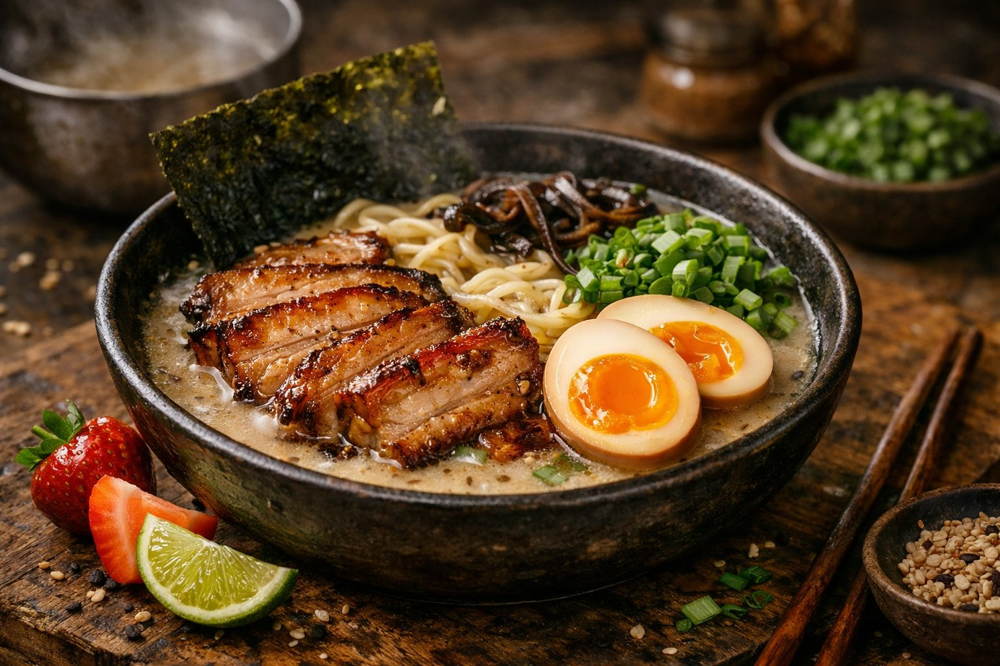
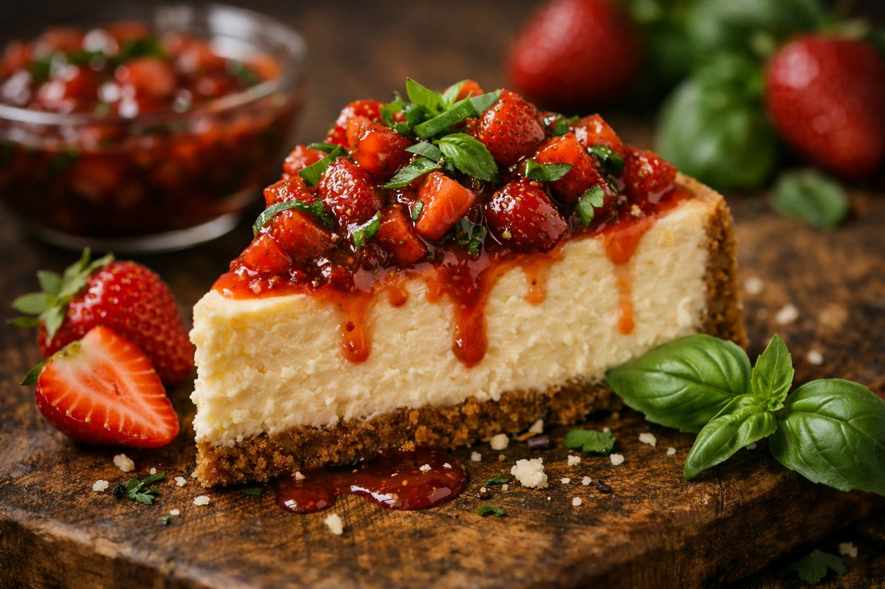
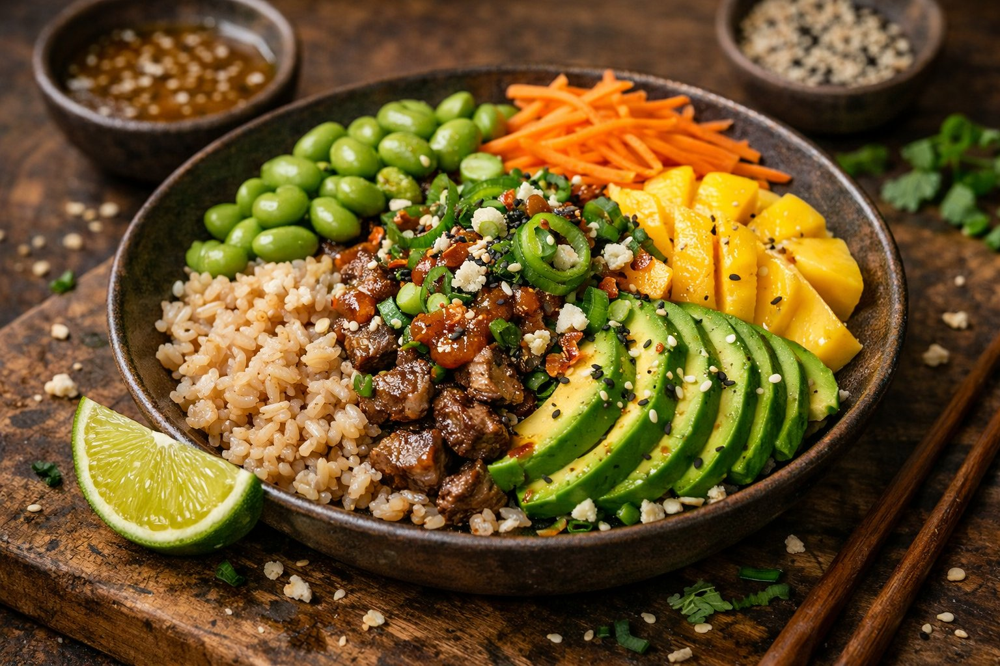
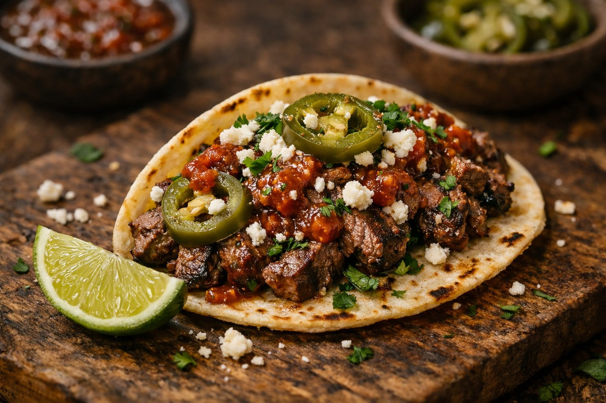
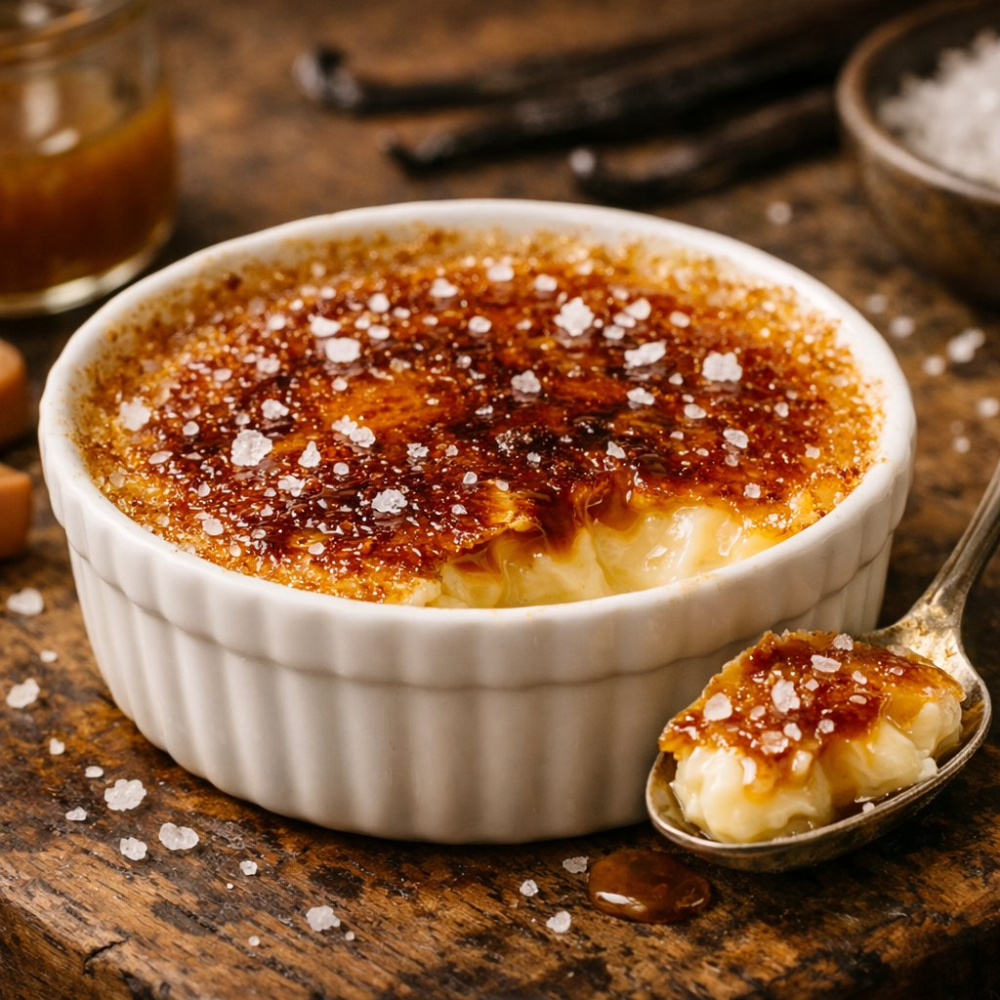

✦ A Passion for Flavors ✦
Discover recipes that bring people together — from quick weeknight dinners to weekend feasts crafted with heart and a whole lot of spice.
✦ Fresh from the Kitchen ✦
Hand-picked favorites our readers can't stop making

Silky ribbons of pasta tossed with a rich mushroom cream sauce, finished with fresh parsley and a hint of truffle.

Tender marinated beef, pickled jalapeños, cotija cheese, and smoky chipotle salsa piled on warm corn tortillas.

A vibrant bowl of brown rice, sliced mango, creamy avocado, edamame, and sesame-ginger dressing.

Creamy New York-style cheesecake topped with a fresh strawberry-basil compote on a buttery graham cracker crust.

Rich pork bone broth simmered for 12 hours, served with chashu pork, soft-boiled eggs, and fresh noodles.

Hand-stretched dough baked in a blazing oven with San Marzano tomatoes, fresh mozzarella, and basil.
✦ Our Story ✦
Savor & Soul was born from a simple belief: food tastes better when it's made with intention. We share stories, techniques, and flavors from around the world — because every meal is a journey.
Say Hello